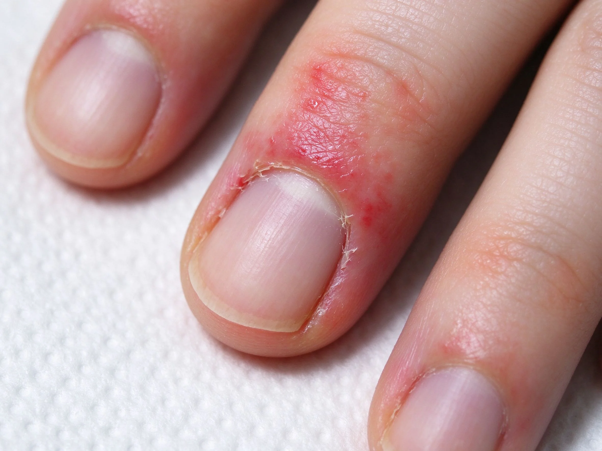

美甲凝膠美甲過敏症狀：接觸性皮膚炎預防與處理是什麼？中階入門攻略
凝膠過敏多因『沒完全固化』或『手指碰到未乾的膠』，先就醫確認，再改用低敏或做好隔離。
凝膠美甲過敏症狀：接觸性皮膚炎預防與處理原理與辨識重點：美甲師不說的多因沒完全固化
凝膠裡的成分若在『未固化狀態』接觸皮膚、或固化不完全殘留，久了可能引起接觸性過敏，皮膚會紅、癢、起疹。這不是『膠有毒』，而是『固化沒做好』或『體質敏感』。
誰適合做凝膠美甲過敏症狀：接觸性皮膚炎預防與處理？皮膚起反應對號入座
這套做法主要適合「皮膚起反應」的場合與族群。如果你是通用美甲的愛好者，或正處在中階階段的學習者，都很值得先把它認識起來——它會是你判斷其他款式的地基。
凝膠美甲過敏症狀：接觸性皮膚炎預防與處理美甲施作步驟：接觸性過敏
出現紅癢就先停用、看皮膚科確認是否過敏 → 確認是過敏就避開該成分 → 施作時戴手套、不讓膠沾皮膚 → 每次一定照到完全固化。
凝膠美甲過敏症狀：接觸性皮膚炎預防與處理優缺點分析：美甲持久度與傷甲評估
| 面向 | 說明 |
|---|---|
| 好上手 | 中階階段就能掌握，是通用流派的入門招牌 |
| 辨識度高 | 靠「多因沒完全固化」一眼認得出，成品是避開致敏原 |
| 變化多 | 可延伸出多種「皮膚起反應」的變化款 |
| 注意 | 「多因沒完全固化」與包邊沒顧好，持久度會打折 |

凝膠美甲過敏症狀：接觸性皮膚炎預防與處理新手雷區：或接觸未乾膠與常見錯誤
注意：別以為『越照越乾就越好』，過度固化會燙傷；『照不足』又會致敏。抓到剛好的固化時間，是保護自己也保護客人。
凝膠美甲過敏症狀：接觸性皮膚炎預防與處理和其他美甲做法的差別比較
凝膠美甲過敏症狀：接觸性皮膚炎預防與處理最常被拿來和「做美甲皮膚紅腫癢？接觸性皮膚炎預防指南、光療燙傷怎麼辦？照燈手指發熱原因與預防」搞混。簡單分：凝膠美甲過敏症狀：接觸性皮膚炎預防與處理更執著在「多因沒完全固化」這一個細節上，而隔壁那幾種把重點放在別的地方——同一個美甲領域、不同的側重點，看多了自然分得開。
凝膠美甲過敏症狀：接觸性皮膚炎預防與處理美甲常見問題 FAQ
Q：過敏是不是一輩子都不能做美甲？ A：不一定。很多人是對特定成分過敏，換低敏／無酸底膠、或換系統（凝膠→水晶）就可能改善。但一定要先看醫生確認。
Q：怎麼知道自己有沒有過敏？ A：最準是看皮膚科或做貼膚測試。別自己亂猜，過敏一直拖會越來越嚴重。